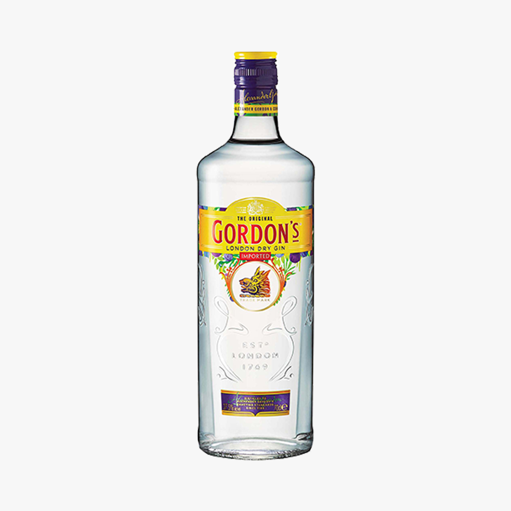

Gordon's London Dry é destilado 3 vezes usando uma receita secreta. O sabor inconfundivelmente refrescante vem das bagas de zimbro colhidas à mão, e uma seleção de outros botânicos: uma combinação que faz de Gordons o London Dry mais vendido do mundo.